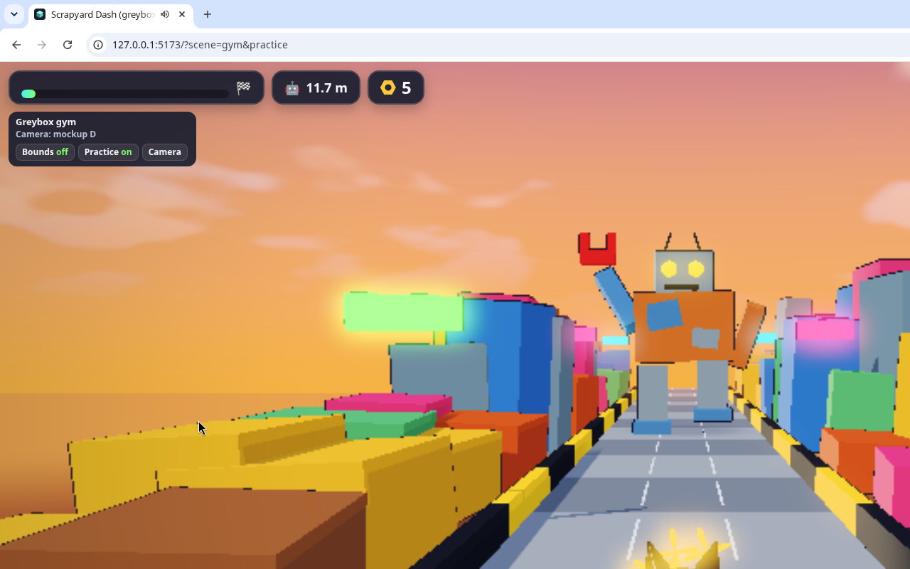
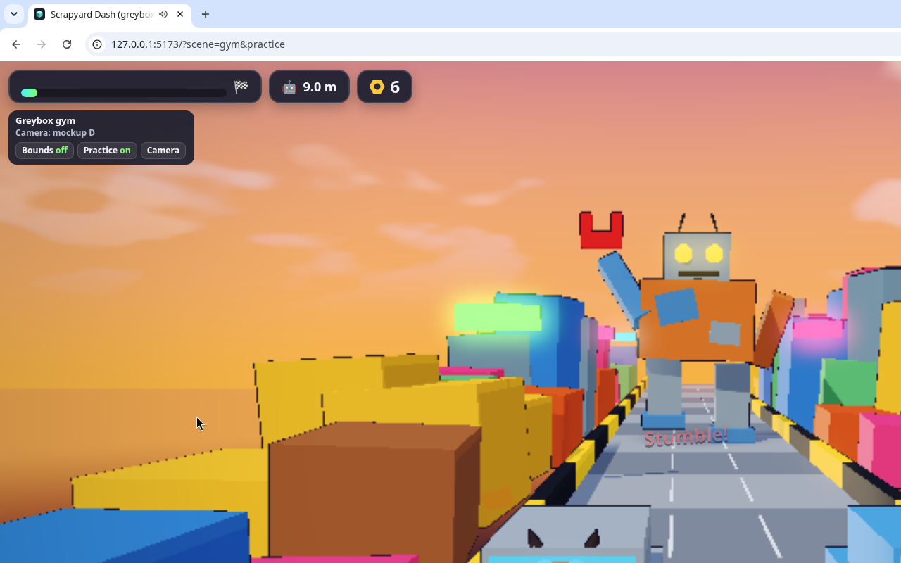
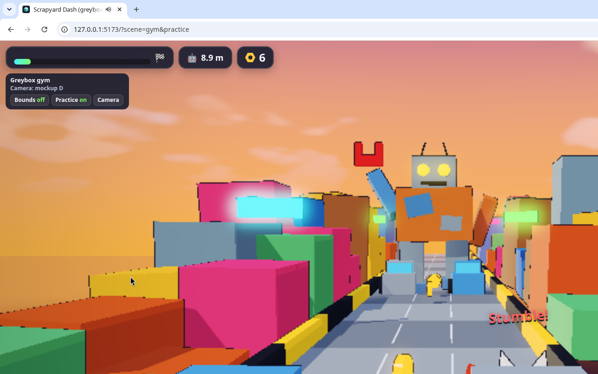
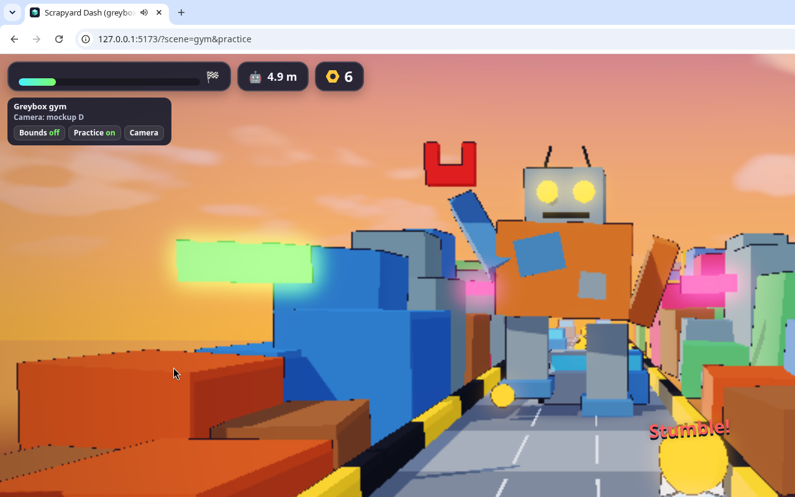

Gym → Play → Ship
The order that kept this build calm: prove the rules in a greybox, swap in real assets without touching the rules, playtest on a private link, then publish only when the release checks pass.
Start from a checked template
Before any game work, Grok Bot pinned vgd-wasm-game-template at v2.7.0 and ran its own quickstart from that checkout: README vs GETTING-STARTED, 29 markdown links, all 16 skills' frontmatter, the four prompt templates (premise, mockups, kickoff, slice) and a smoke run. Then the quickstart clone path made games/blank-start with commit 843eace.
Greybox gym: rules before art
share/media/kickoff/broll/gym-broll.webmCommit 3c52811, zero credits. Three lanes, 8 m/s toward the camera, 420 m to the finish (about 53 s). Barrels stumble you, scrap cars and gaps end the run, the mech closes in on every slowdown. The rules live in the Rust sim (game/crate/src/params.rs, world.rs), so assets later only change how things look.
Handy URL flags from docs/direction/kickoff-gym.md: ?scene=gym, ?scene=viewer, &practice (nothing is lethal), &bounds, &seed=7.

share/media/kickoff/broll/desk-01.png
share/media/kickoff/broll/desk-02.png
share/media/kickoff/broll/desk-03.png
share/media/kickoff/broll/desk-04.pngPlaytesting from a laptop over Tailscale
Grok Bot installed Tailscale on its box and bound the Vite dev server to the box's tailnet address, not to the public internet. Chong-U approved the box on his tailnet and played the dev build from his MacBook while the bot kept working. The first playtest found a real bug right away (menu entries not clickable, fixed in 3426639).
The tailnet address is private to Chong-U's devices and isn't a public link.
Play: same rules, real assets
Play drew the rigged raccoon (7fca476), then the mech, barrel, scrap car, hex nut and lane tile (5f866ca). Then came feel fixes from playtest notes:
- Free strafe: hold to slide at 6.5 m/s, release to stop. Hazards, nuts and gaps stay in three lanes, and a hazard hits anywhere in its lane corridor (
269d005,cb688e1). - Pop-in: side scenery laid out from 100 m back into the haze, so it never appears at the player's depth.
share/media/trailer/project/assets/footage/dodge.mp4Fix ac2b3d1: Play used to wait for about 15 MB of GLBs, and the release allowlist left the models out, so packaged builds 404'd them. Now the game boots once the 3.9 MB raccoon is ready and streams lane → nut → barrel → car → mech, with placeholders hot-swapped as each lands.
Ship to the web
The template's release script refuses to deploy without a passing smoke test. The smoke still checked the old lane snap, so Grok Bot updated it to measure X movement while holding keys (ddf60c9, 4708ba8), passed on desktop and phone under WebGPU and WebGL2, then deployed through the Vercel connector.
| Field | Value |
|---|---|
| URL | scrapyard-dash.vercel.app |
| Source commit | 4708ba8 (clean tree) |
| Deployed | Nov 4, 2:51 PM HKT |
| Runtime | 16 files, about 15.7 MB |
| Receipt | deploy/web/deployment.json (3322688) |
Trailer with HyperFrames
share/media/trailer/scrapyard-dash-trailer.mp4share/media/trailer/scrappy-yard-gameplay-trailer.mp4From share/media/trailer/project/SPEC.md: hazard-signage type over real headless gameplay capture (HUD hidden), cut on the beat of the game's own 150 BPM chase track. Shots: mech drop hook → SCRAPYARD / DASH title → RUN / JUMP / COLLECT on real events → escalating montage → DON'T GET CAUGHT → a real crash and results card → end card with the play URL. The spec bans glow, gradients, glass cards and invented UI; every object on screen comes from real footage.
share/media/trailer/project/assets/footage/wide.mp4share/media/trailer/project/assets/footage/nuts.mp4share/media/trailer/project/assets/footage/crash.mp4- Greybox first: by the time art arrived, the rules were already fun-tested.
- A private playtest link lets the director play the real build while the builder keeps going.
- Let release checks block you. The stale smoke test caught that the game's controls had changed.
- Capture b-roll as you go; the trailer was cut from footage the bot could record any time.